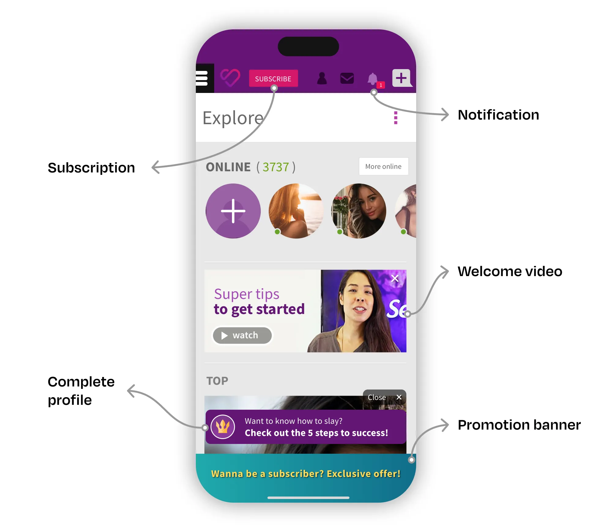
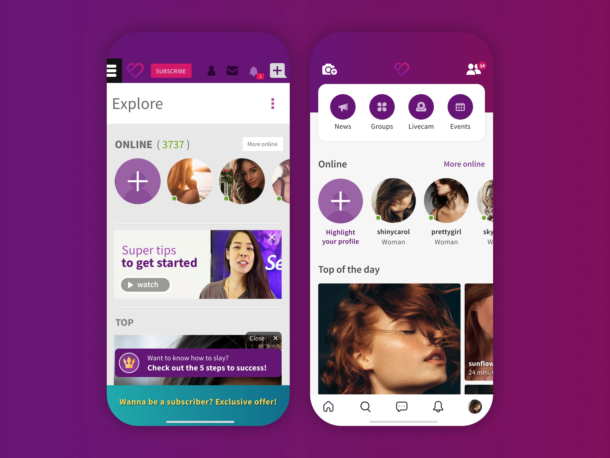
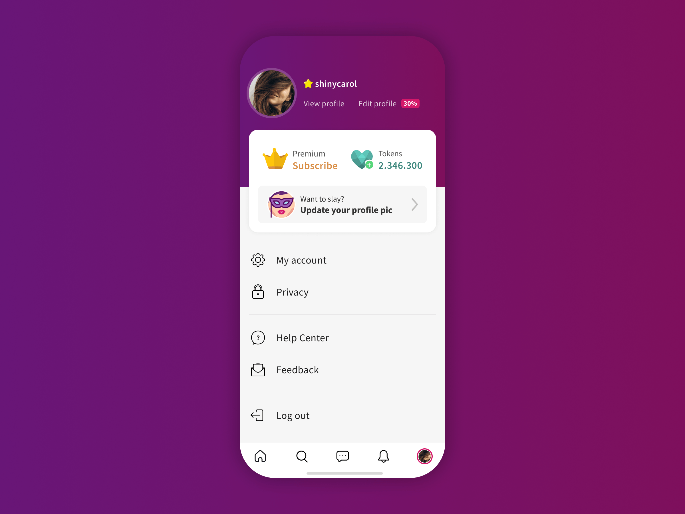

Executive summary
The company
eSapiens is a Brazilian venture builder behind SL, one of Latin America's largest social discovery and dating platforms for adults, with 8M+ members. SL offers singles and couples a privacy-first, judgment-free space to meet like-minded people. It makes money from subscriptions, premium upgrades, and in-app tokens.
My role
As Design Lead, I managed a team of 3 designers and led this initiative from discovery to a validated, build-ready design, partnering with the founders, C-level, analytics, and engineering. I moved on to Farfetch while the redesign was in beta, so post-launch results aren't mine to claim. Instead, this case shows how I sized the opportunity, de-risked the solution, and defined how success would be measured.
The problem
Mobile had grown from roughly 12% to 80% of daily traffic, but SL's core experience was still built for desktop. New members landed on a cluttered first session where compatible people, the product's core value, were hard to find. That put activation, Day 1 retention, and subscription revenue at risk.
The context: most of the business on the weakest experience
When I joined SL in late 2014, 88% of traffic came from desktop. With a small team and budget, we applied a mobile-first mindset to new features, but core modules like home, navigation, and profile were still built for desktop. By 2018, mobile had reached 80% of traffic and complaints about the mobile experience kept growing. Most of the business was running on its weakest experience, so I started a research initiative to measure the impact on members, new sign-ups, and revenue.
How a social platform grows
SL's value is its people: every member is both looking for connections and part of the network others browse. Growth depends on two loops:
- The member loop: discover compatible people → connect through a message or friend request → start a conversation → meet in real life.
- The business loop: activation → retention → subscription → premium upgrades and tokens. Premium members pay for visibility: a more prominent profile, a premium look and badge, and messages delivered with higher priority.
This makes the first session the most valuable moment in the product. A new member who can't find compatible people and send a first message has little reason to return, and each one who leaves makes the network less valuable for everyone else. That's why I framed the project around Day 1 retention.
On a privacy-sensitive product, trust is part of the design too. Members need to understand the product quickly, feel in control of what they share, and never feel pushed.
The problem: a first session working against the member
I led a mixed-methods study of the home page and the journeys it starts. It combined contextual interviews with people who had never used SL, Hotjar recordings and heatmaps, Google Analytics funnels, and NPS feedback. I grouped the six pain points I found into three strategic problems:
- Too much at once. Every interviewee found their first access confusing, with several onboarding processes running in parallel. A floating assistant got 75% positive interaction, yet new members saw it as a nuisance. They wanted to explore first.
- The network was invisible. Members expected the home page to show “people compatible with them”, but it surfaced generic content, and over 80% of clicks landed on its first two blocks. Core features were buried in a hamburger menu, and only one interviewee found the search tool.
- Slow, shallow sessions. Every interviewee found SL slower than the apps they used daily, echoing our NPS. On mobile, members browsed 40% fewer pages per session than on desktop, partly because few paths connected one module to the next.

My approach
As Design Lead, I took the following actions:
- Framed the problem as a business risk, connecting research findings to activation, retention, and revenue so founders and C-level leadership could see the cost of inaction.
- Prioritized under constraints. With a small engineering team, I focused the first release on two fronts: putting the core features of both loops within easy reach, and simplifying the first session.
- Protected the business model by analyzing how often each feature was used before reorganizing the information architecture, since any navigation change could move critical KPIs.
- Guided a team of 3 designers through exploration and refinement, tying every decision back to the member loop.
- Validated before building with usability tests on the riskiest navigation and monetization changes.
- Defined success before launch with analytics and engineering, through a measurement plan and a staged rollout.
Key decisions
1. Put the core loop one tap away
Decision: I removed the hamburger menu. The most frequent tasks shared by all our personas went into a bottom navigation bar, and every other key module became reachable in one tap from the home page.
Why: without finding people, new members can't send a first message, and without that first connection they rarely come back.
Trade-off: secondary features lost top-level visibility. I used the usage data to decide which features earned a first-level spot, and grouped the rest by meaning.

2. Simplify the first session, even at the cost of a converting feature
Decision: I cut back the processes competing for attention in the first session, giving members room to explore before guiding them.
Why: the floating assistant did well on its own metric, but it competed with the product's real value, which is discovering people.
Trade-off: less guidance risked lower profile completion, so I made onboarding completion a guardrail metric for the beta.
3. Bring profile, account, and privacy into a single hub without hurting revenue
Decision: I designed a new profile page bringing together profile, account settings, and privacy controls, which were previously scattered across hard-to-reach screens.
Why: a clear place to manage how members show up and what they share is essential for trust.
Trade-off: subscription and token purchases had lived alongside these entry points, so moving them put revenue at risk. I kept those calls to action prominent, together with quick access to the public profile and profile editing.

Validation
I ran a week of moderated usability tests with 8 participants, including singles and couples, matched to our personas. I chose tasks for their importance to member success, their impact on business KPIs, and how unfamiliar the changes might feel. They included finding a compatible person, buying a subscription or tokens, and accepting friend requests.
Most participants completed the tasks with ease and navigated confidently. The riskiest flows worked as intended, and the only hesitation was telling system notifications apart from friend requests. With the key hypotheses validated, no second round was needed.
Measuring success
Before launch, I defined how we would judge the redesign:
North Star: Day 1 retention of new members
Activation: Time to first sent message, onboarding steps completed
Engagement: Sessions per user, pages per session, Engagement Score
Connection quality: Success Score (message response rate)
Business guardrails: Subscription conversion, premium upgrades, token purchases
The core hypothesis: if a new member finds a compatible person and sends a first message in their first session, they are more likely to return the next day.
To reduce risk, the redesign went first to a restricted group of beta testers, then gradually to new members, and finally to the entire member base.
Reflections
I left for Farfetch while the redesign was in beta, so I didn't see its final results. Looking back, here's what I'd do differently:
- Ship smaller, learn sooner. I'd break the redesign into smaller releases, for example A/B testing the bottom navigation on its own, to get real data faster.
- Capture baselines first. I'd set up Day 1 retention baselines by cohort before designing, giving the beta a clean comparison point.
- Treat performance as a design problem. Load time was the most consistent complaint, so I'd set performance targets with engineering as part of the redesign.
This project was about designing for a vulnerable moment: the first time someone opens a sensitive social product and decides whether it's worth coming back. Getting it right meant balancing member trust, network value, and revenue.
- Share of daily traffic from mobile devices in 2018, up from about 12% in 2014.
- Average pages per session on mobile vs. desktop, from Google Analytics, before the redesign.
- Share of home page clicks on the first two content blocks, from Hotjar heatmaps and Google Analytics events.